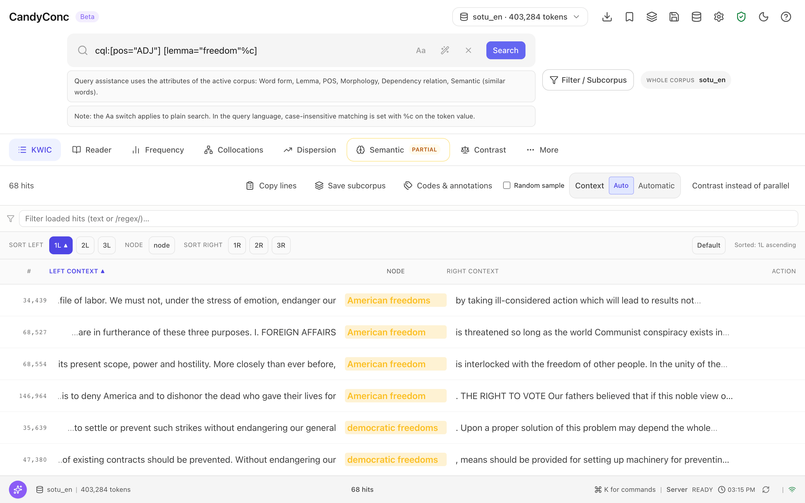
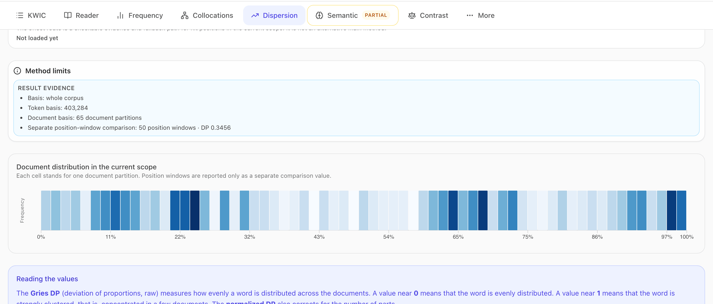
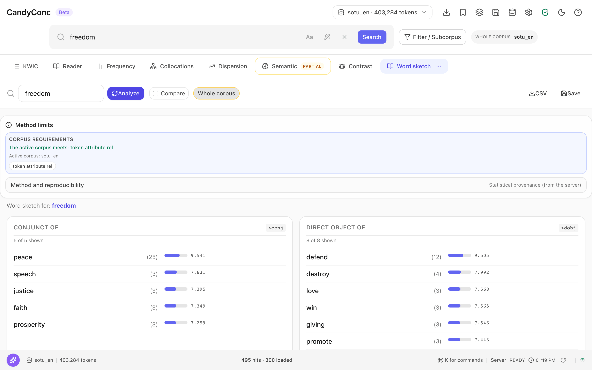

Tutorial: from a search to evidence you can cite#
This tutorial follows the word freedom through the English sample corpus. You search all its forms with the query language, group the adjectives in front of it, check how evenly it is spread over the addresses, look at its grammatical partners in a word sketch, go back from a partner to the lines, and save lines together with the record of how you found them.
Before you begin#
Complete First results, so that the sample corpus
sotu_enis imported with dependency relations and CandyConc is running.Select sotu_en in the corpus selector in the top bar.
Step 1: Search all forms of the word#
In the search field, enter the following query:
cql:[lemma="freedom"%c]
Press Enter.
The concordance shows 507 hits. The prefix cql: marks the input as the
query language. [lemma="freedom"] matches every token whose lemma is
freedom, so it finds freedom and freedoms, and %c ignores case. The
plain search freedom in the first tutorial found 495 hits, because it
matches the word form only. The 12 additional hits are the forms freedoms
and Freedoms.
Step 2: Group the adjectives in front of it#
Enter this query:
cql:[pos="ADJ"] [lemma="freedom"%c]
Press Enter.
The concordance shows 68 hits. Each hit is a sequence of two tokens, an adjective followed by a form of freedom, and the column NODE shows both, for example American freedoms.
Next to SORT LEFT, click 1L.
The label Sorted: 1L ascending appears, and the lines are grouped by the
adjective: first American, then democratic, then economic, and so on.
Scroll through the groups to see which kinds of freedom the addresses name.
pos="ADJ" uses the Universal Dependencies part-of-speech tags that the
English pipeline assigns. See Query language.


The 68 two-token hits sorted by 1L. The notes under the search field describe the query assistance and the %c flag.#
Step 3: Check how evenly the word is spread#
Enter
cql:[lemma="freedom"%c]again.Press Enter.
Click the tab Dispersion.
CandyConc counts the hits in each of the 65 addresses and summarizes the distribution. The main values are:
Measure |
Value |
Reading |
|---|---|---|
DP (deviation of proportions) |
0.3585 |
0 means spread in proportion to the length of the addresses, 1 means concentrated in one place |
Range |
0.9538 |
62 of the 65 addresses contain the word at least once |
The heat map below the values shows the hits per address in the order of the corpus, which is chronological. The measures and their formulas are in Dispersion.


Below the values, the result evidence names the basis of the measures, and the heat map shows the share of hits in each address in corpus order.#
Step 4: Look at its grammatical partners#
Enter
freedom.Press Enter.
Click More in the tab bar.
Choose Word sketch.
The word sketch lists the words that are connected with freedom by a dependency relation, one table for each relation. Some of the tables:
Table |
Meaning |
First rows (number of pairs) |
|---|---|---|
HAS ADJECTIVAL MODIFIER |
adjective modifying freedom |
greater (14), human (8), political (5) |
DIRECT OBJECT OF |
verb with freedom as its direct object |
defend (12), destroy (4) |
HAS CONJUNCT |
word coordinated with freedom |
democracy (12), justice (8) |
Next to the name of each table stands the relation of the dependency search.
With <, freedom is the dependent, with > it is the head.
The number in parentheses counts pairs of tokens in that relation, and the
second number in each row is the logDice score of the pair. See
Word sketches.


The first relation tables of the word sketch. DIRECT OBJECT OF <dobj lists the verbs that take freedom as their object, among them defend, which step 5 opens.#
Step 5: Go back from a partner to the lines#
In the table DIRECT OBJECT OF
<dobj, click the row defend.
The concordance shows 12 hits, the same number as the row. The search bar
holds the dependency search of the pair, [word=defend] >dobj [word=freedom],
in the form HEAD >relation DEPENDENT, and the line above the concordance
reads From the word sketch: freedom · direct object of · defend, 12 pairs.
The node of each line is the verb defend, and freedom or a phrase ending
in freedom follows as its object, for example defend their freedom.
Step 6: Copy a line with its citation#
Click Default in the sort row to restore corpus order.
Point to the first line and, in the column ACTION, click the button Copy with citation (source, document, position).
CandyConc copies the line to the clipboard in the form
left context | node | right context followed by the source, the document,
and the corpus position in square brackets. For the first line, the copied
text ends with [state_union, doc sotu-1951-Truman, pos 55723]. Paste it
into your notes. The position leads back to exactly this hit, because it is
the token position that the concordance shows at the start of the line.
Step 7: Save the lines as an evidence package#
An evidence package stores concordance lines together with the query, the scope, a fingerprint of the corpus, and a checksum of the rows, so that you or a reviewer can check later that the lines come from this corpus and this query.
Enter
cql:[pos="ADJ"] [lemma="freedom"%c].Press Enter. The concordance shows 68 hits.
In the top bar, click Export.
Choose Export as CSV.
In the dialog Export, under Evidence package / report, click Evidence JSON.
Click Export.
Your browser saves a file whose name starts with evp_ and ends in .json.
It contains, among other fields:
scope: the query, the corpus, the document set (nullfor the whole corpus), and the case setting,corpus: the name of the corpus, itsindex_fingerprint, and the hash of its metadata schema,result_summary:total_matches68,exported_rows68,truncatedfalse, androw_hash_sha256, a checksum over the exported rows,method_blocks: how the rows were produced and the limits of that method,rows: one entry per hit with position, document, context, and document metadata.
What you have now#
You have a count of all forms of freedom (507 tokens in the sample corpus), a grouped view of the 68 adjective phrases, a measure of how evenly the word is spread (DP 0.3585, present in 62 addresses), its grammatical partners with the 12 lines behind one of them, a citable line, and an evidence package that records query, scope, corpus, and a checksum for these 68 lines.
Every number in this tutorial leads to positions in the corpus. From numbers to lines explains for each kind of result which positions it counts. To repeat the analysis later, see Reproduce a result.